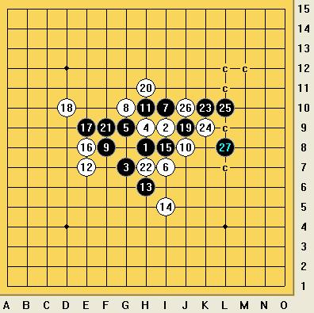
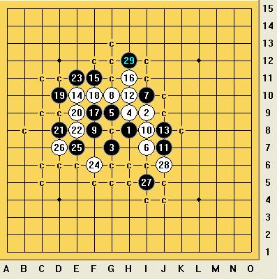

大家圣诞快乐！重拾斜月经典老变化
首页
茗弈阁
#1 大家圣诞快乐！重拾斜月经典老变化 作者：流浪者的梦 发表时间：2009-12-25 11:16:31
斜月：
=======上图对应的爱五子棋谱代码如下，以便你拆解：========
h8i9g7h9g9i7i10g10f8j8h10e7h6i5i8e8e9d10j9h11f9h7k10k9l10j10f10f11g11h12i11j12f6f7g6e6e5d4g5g8d5f5l11m12l9l8j11i12l13l12k12m14k11m11m10m13m15n9c6
======================================================超级经典的59手全盘连接做V！
=======上图对应的爱五子棋谱代码如下，以便你拆解：========
h8i9g7h9g9i7i10g10f8i8j7h10j8e10f11h11f9f10d10e9d8e8e11f6e7d7i5j5h12f12g6g5l8k7l9j9l6l7k8m10m8n8i4i6j4h6k4e3f4l4i3k5j3h5i2
======================================================32手为何必败？为何33和35是关键点？
=======上图对应的爱五子棋谱代码如下，以便你拆解：========
h8i9g7h9g9i7i10g10f8i8j7h10j8e10f11h11f9f10d10e9d8e8e11f6e7d7i5j6h5g5h6j4g4h12h13g11i13f12e13f3d11c11e12f13d12d9d13d14e14e15b11c12h4h7f4e4d6c5h2h3e5g3b8c7c9a7b10
======================================================这个变化难杀程度......从上到下再从下到上！
=======上图对应的爱五子棋谱代码如下，以便你拆解：========
h8i9g7h9g9i7i10g10f8i8j7h10j8e10f11h11e8h12h13f12f10f9g8d8g12e13g11e11e12d10c9f14j10j9i5
======================================================黑棋从19手开始这一路唯一下去......
=======上图对应的爱五子棋谱代码如下，以便你拆解：========
h8i9g7h9g9i7i10g8f10j7h10g10i8f8h12i13f12
======================================================这个8很弱么？后面15，17两手强大的做棋谁能在不知道谱的情况下走出来？
=======上图对应的爱五子棋谱代码如下，以便你拆解：========
h8i9g7h9g9i7i10f8j9k8g10g11h10f10f9h11d7e7d9c6d8d10e10g8f11g12c10c9b9
======================================================15开始的一路变化谁能完全正确的走出来啊？
=======上图对应的爱五子棋谱代码如下，以便你拆解：========
h8i9g7h9g9i7i10h10j8g8i5h6k8l8j9l7j7j6l9i6k6k10k5k7m9m10f6
======================================================白棋一路强防.....
希望这些老变化大家能有所作用，祝大家圣诞节快乐！！！
［ 五子痴 于 2009-12-25 11:34:59 时奖励此帖[金币加 20 威望加1］
#2 Re:大家圣诞快乐！重拾斜月经典老变化 作者：茗弈小刀 发表时间：2009-12-25 11:56:24
谢谢分享，先抢沙发再来细细学习。
#3 Re:大家圣诞快乐！重拾斜月经典老变化 作者：岑小鱼 发表时间：2009-12-25 13:26:27
好多超经典的变化 
#4 Re:大家圣诞快乐！重拾斜月经典老变化 作者：wd1988 发表时间：2009-12-25 15:29:35
第一图是不是有点麻烦？经典倒是经典，但与时俱进也是新时代的主旋律嘛

这样的话，胜得简单明了
第三图的斜月29手可以先盖住16的眠三，之后就根本没有什么从上到下的麻烦杀了，下面直接杀掉。

当然这些补充完全没有不敬的意思，楼主的经典变化都是前人智慧和实力的结晶，没有他们的劳动，就没有我们后人的成果，我们站在巨人的肩膀上眺望未来。就如同楼主所说：“在没有谱的情况下，谁能走出这些精妙的招数？”那第一个走出这个变化的人肯定是没有谱的吧？有了他们的基础，我们这才有了后来的成果。
［ 流浪者的梦 于 2009-12-25 19:32:47 时花20金币送鲜花一朵］
［ 茗弈小刀 于 2009-12-25 20:45:05 时奖励此帖[金币加 20 威望加1］
#5 Re:大家圣诞快乐！重拾斜月经典老变化 作者：岑小鱼 发表时间：2009-12-25 16:28:41
第2图的28位置不一样
第1图的顺序我记得是这样的。。
=======上图对应的爱五子棋谱代码如下，以便你拆解：========
h8i9g7h9g9i7i10g10f8j8h10e7h6i5i8e8e9d10j9h11f9h7k10j10l9
======================================================
#6 Re:Re:大家圣诞快乐！重拾斜月经典老变化 作者：wd1988 发表时间：2009-12-25 16:53:14
引用：
原文由 岑小鱼 发表于 2009-12-25 16:28:41 :
第2图的28位置不一样
第1图的顺序我记得是这样的。。
=======上图对应的爱五子棋谱代码如下，以便你拆解：========
h8i9g7h9g9i7i10g10f8j8h10e7h6i5i8e8e9d10j9h11f9h7k10j10l9
======================================================
第一图顺序没错呀？
#7 Re:大家圣诞快乐！重拾斜月经典老变化 作者：行云流水 发表时间：2009-12-25 17:21:52
=======上图对应的爱五子棋谱代码如下，以便你拆解：========
h8i9g7h9g9i7i10g10f8i8j7h10j8e10f11h11f9f10d10e9d8e8e11f6e7d7i5j6h5g5i6g4h6j4h7h4j5g8k4l3k5l5k8l9k6k7i4
======================================================第3图白30之后不是有局部简单杀吗？
［ 流浪者的梦 于 2009-12-25 19:52:19 时花20金币送鲜花一朵］
［ 茗弈小刀 于 2009-12-25 20:37:32 时奖励此帖[金币加 20 威望加1］
#8 Re:大家圣诞快乐！重拾斜月经典老变化 作者：岑小鱼 发表时间：2009-12-25 17:30:16
24的位置。。。。
#9 Re:大家圣诞快乐！重拾斜月经典老变化 作者：怪 发表时间：2009-12-25 17:34:26
大师们太强了！
#10 Re:Re:大家圣诞快乐！重拾斜月经典老变化 作者：wd1988 发表时间：2009-12-25 17:48:33
引用：
原文由 岑小鱼 发表于 2009-12-25 17:30:16 :
24的位置。。。。
知道呀，楼主的意思就是24活三的话，之后有这么一路变化吧
#11 Re:大家圣诞快乐！重拾斜月经典老变化 作者：小帮帮 发表时间：2009-12-25 19:05:08
很强大！学习了
#12 Re:大家圣诞快乐！重拾斜月经典老变化 作者：流浪者的梦 发表时间：2009-12-25 19:40:36
 认错认错！顾伟老师说的极是！记得早上第3图是想找一个曾经记忆中一个往下跳三然后在右边复杂T杀的变化，结果找了半天都没找到！偶然翻到这个变化，与记忆里的复杂程度是有差异，不过还是以为就是了，所以没想就发上来了......深刻自我检讨！！！变化总是会遗忘的，即使是曾经记忆最深的变化，一旦一段时间不去接触就会遗忘，希望大家不要再犯我这样的错误！更可悲的是......我现在还没找到那路复杂杀......
认错认错！顾伟老师说的极是！记得早上第3图是想找一个曾经记忆中一个往下跳三然后在右边复杂T杀的变化，结果找了半天都没找到！偶然翻到这个变化，与记忆里的复杂程度是有差异，不过还是以为就是了，所以没想就发上来了......深刻自我检讨！！！变化总是会遗忘的，即使是曾经记忆最深的变化，一旦一段时间不去接触就会遗忘，希望大家不要再犯我这样的错误！更可悲的是......我现在还没找到那路复杂杀...... ［ 茗弈小刀 于 2009-12-25 20:45:38 时花20金币送鲜花一朵］
#13 Re:大家圣诞快乐！重拾斜月经典老变化 作者：流浪者的梦 发表时间：2009-12-25 19:51:03
=======上图对应的爱五子棋谱代码如下，以便你拆解：========
h8i9g7h9g9i7i10g10f8i8j7h10j8e10f11h11f9f10d10e9d8e8e11f6e7d7i5j5h12f12g6g4l8l9j10j9k9i11k7j6j4h6m7n6k5l6k6k8k4k3m4l4l5n3n7
====================================================== 锤自己！当时第3图我想的应该是这个变化！刚刚想到了！
锤自己！当时第3图我想的应该是这个变化！刚刚想到了！
 我对不起党，对不起人民，对不起广大五子棋爱好者！
我对不起党，对不起人民，对不起广大五子棋爱好者！
深刻检讨！！！！！！
［ 失落刀 于 2009-12-25 20:29:06 时花20金币送鲜花一朵］
#14 Re:大家圣诞快乐！重拾斜月经典老变化 作者：失落刀 发表时间：2009-12-25 20:30:31
党和人民原谅你啦
楼主再接再厉，继续努力。
#15 Re:大家圣诞快乐！重拾斜月经典老变化 作者：茗弈小刀 发表时间：2009-12-25 20:46:34
谢谢流浪的梦与大家分享探讨，也谢谢老师们的补充。
#16 Re:大家圣诞快乐！重拾斜月经典老变化 作者：天逸 发表时间：2009-12-26 2:38:46
感谢lz的分享啊~~~ 很赞~~
#17 Re:大家圣诞快乐！重拾斜月经典老变化 作者：小帮帮 发表时间：2010-1-4 1:02:37
13楼的，48走49的位置，能杀吗？
#18 Re:大家圣诞快乐！重拾斜月经典老变化 作者：火光冲天 发表时间：2010-1-4 10:20:28
=======上图对应的爱五子棋谱代码如下，以便你拆解：========
h8i9g7h9g9i7i10h10j8g8i5h6k8l8j9l7j7j6l9i6k6k10k5k7m9m10f6g5
======================================================这个怎么杀啊？大家帮忙摆几步。
#19 Re:大家圣诞快乐！重拾斜月经典老变化 作者：忧郁的双眼 发表时间：2010-1-5 0:56:23
嗯 很不错 值得奖励